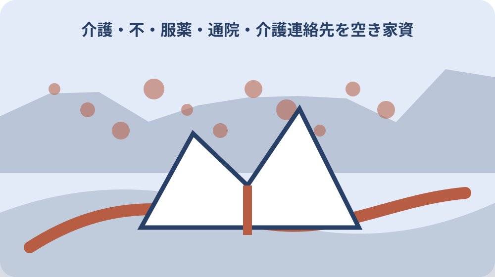

先に結論を確認する
この記事の答え：はい。町公式は高齢者本人のほか、家族、近隣住民、介護支援専門員からの相談も案内しています。本人との関係と困り事を整理して連絡します。
森町で最初に照合する条件：服薬・通院資料は本人の支援に必要な人だけ、登記・契約・税資料は物件管理を担う人だけが見られる保管先に分ける。
最初に支援情報と権利資料を二系統へ分ける
親の入院や実家の片付けが重なると、薬の一覧、診察券、介護事業所の名刺、登記事項証明書、納税通知書が一つの箱へ入りがちです。まず内容を読まず、本人支援と不動産権利の二つの仮置き箱へ分けます。
本人支援側には服薬、通院、介護、緊急連絡を置きます。不動産側には登記、固定資産税、賃貸借、境界、鍵の管理を置きます。両方に関係しそうなメモは複製せず、原本の所在を示す参照票だけを作ります。
分ける目的は秘密を増やすことではなく、救急時に登記書類を探さず、相続相談時に病歴を開示しないことです。表紙の色、保管棚、電子フォルダ名を変え、取り違えにくい物理的な差を付けます。
最初の仕分けでは廃棄しません。古い処方箋も古い権利証も、不要と断定する前に年代と発行者だけを記録します。判断できない書類は第三の保留箱へ置き、誰へ確認するかと期限を付けます。
封筒の外には本人名や病名を大きく書かず、家族内で決めた管理番号を使います。索引には番号、資料群、保管者、最終確認日を置き、封筒を開かなくても必要な担当へ回せる状態にします。
本人の同意と家族の役割を先に確認する
服薬や通院は本人の私的情報です。家族だから全員が同じ範囲を見られると決めず、本人が誰に何を伝えてよいと考えているかを、答えられる状態のうちに確認します。回答日と同席者も残します。
家族の役割は、通院同行、薬の確認、介護窓口との連絡、家の鍵、不動産書類の保管に分けます。一人が複数を担う場合も役割ごとに書き、交代時に渡す資料の範囲を明確にします。
本人が判断しにくい状態なら、家族だけで権限を推測しません。森町地域包括支援センターは財産管理の心配を含む相談を受け付けています。困り事と緊急性を伝え、適切な制度や専門先を尋ねます。
家族会議の結論は『長男が全部管理』では不十分です。原本を持つ人、閲覧できる人、更新する人、緊急時に連絡する人を別欄にし、本人の意向と異なる案は保留として記録します。
同意を確認した時点の本人の体調や説明方法も残します。一度の同意を永続的な包括承諾にせず、新しい共有先や用途が増えたら再確認し、拒否や保留の意思も同じ重さで記録します。
服薬情報は薬の現物と更新日をそろえる
服薬一覧は薬名だけでなく、医療機関、調剤薬局、服用回数、確認日を一組にします。以前の処方を現行と誤認しないよう、中止薬は消さずに中止確認日を付けて別欄へ移します。
家に残る薬袋、お薬手帳、本人の説明が食い違うときは推測で一本化しません。次回受診または薬局への確認事項として残し、確認できた情報だけに根拠と日付を付けます。
救急医療情報キットには服薬内容を記載します。キットへ書いた後も元の薬歴一覧を更新しなければ二重管理になります。薬が変わった日に、一覧、キット、家族共有の三箇所を点検します。
薬の写真は形や色だけで特定する資料にしません。薬袋の氏名、薬名、日付が読める範囲を記録し、共有先を限定します。写真を撮った日と現在服用中かどうかは別の項目です。
市販薬や健康食品も本人が使っていれば別欄へ置きます。処方薬と同じ効能だと家族が判断せず、次回受診時に確認できる名称、量、使用頻度を現物から転記し、終了した物は終了日を残します。
通院記録は医療機関ごとに作る
通院先が複数ある場合は、病院名だけの一枚表より医療機関ごとの記録を作ります。診療科、主な相談内容、次回日、持参物、連絡先を分け、別の病院の予約や検査結果を混ぜません。
かかりつけ医の情報は救急時にも必要です。森町のキットへ記す名称と電話番号を診察券で照合し、移転や診療科変更がないかを確認します。診察券の写真そのものを広い家族共有へ置く必要はありません。
通院同行者は診断内容を自分の解釈だけで家族へ伝えず、本人が共有を望む範囲で次回までの行動を記します。薬の変更、検査日、受診条件を分け、曖昧な医学的判断は医療機関への質問に戻します。
予定変更の履歴も残します。予約日を上書きすると、誰がどの時点で何を知っていたか分かりません。旧日付、変更日、新日付、連絡者を一行で残し、送迎担当へ更新版を渡します。
診療情報提供書や検査結果は家族の要約だけに置き換えません。原本の保管場所と発行日を記し、必要な受診先へ持参する資料を医療機関ごとに準備します。不動産相談の持参袋とは色を変えます。
介護連絡先は平時と時間外を分ける
森町地域包括支援センターの電話は0538-85-6341、通常窓口は祝日等を除く平日8時30分から17時15分です。家族の連絡表には、この通常窓口と利用中の介護事業所を分けて記します。
町は時間外連絡先として役場代表0538-85-2111を案内しています。ただし、あらゆる緊急事態を同じ窓口が処理するという意味ではありません。事故、急病、介護相談の状況別に連絡順を決めます。
地域包括支援センターは本人、家族、近隣住民、介護支援専門員から相談を受け付けます。家族が遠方でも、本人との関係、住所、現在の困り事を整理して相談の入口にできます。
連絡先一覧には担当者の個人名だけを残さず、組織名と代表番号、確認日を添えます。異動や担当変更があっても連絡が途切れないよう、個人携帯を唯一の窓口にしません。
電話時は相談者、本人のいる場所、直前の変化、折返し先を短く読める形にします。時間外番号を保存しただけで備えたことにせず、救急要請を優先する状態と翌開庁日に相談する状態を家族で区別します。
救急医療情報キットへ必要項目だけ移す
森町の救急医療情報キットには、緊急連絡先、かかりつけ医、持病、服薬内容を記載します。これは不動産資料の索引ではないため、土地の地番、預金、権利証の場所を同じ用紙へ加えません。
町の案内ではキットを冷蔵庫の見つけやすい場所に保管します。家族だけが知る戸棚の奥へ移さず、指定された表示方法や保管方法を現行案内で確認します。冷蔵庫を買い替えた時も移設を点検します。
対象には75歳以上のひとり暮らしまたは高齢者のみ世帯、避難行動要支援者名簿掲載者等が含まれます。年齢だけで対象外と決めず、本人の世帯状況を示して地域包括支援センターへ確認します。
キットの内容は作成日で固定されません。薬、医師、緊急連絡先が変わったら更新し、古い用紙は現行版と混ざらないよう回収します。家族一覧にも更新日だけを通知し、詳細の一斉送信は避けます。
冷蔵庫にはキットがあることを示す表示も含めて現物を確認します。家族がコピーを持つ場合は現行版の日付を一致させ、原本と写しのどちらを更新したか分からない状態を作りません。
登記・契約・税の原本保管を固定する
不動産側では、登記関係、売買・賃貸借契約、固定資産税、境界資料をさらに分けます。原本を頻繁に持ち回らず、保管場所と持出記録を決めます。医療機関へ持参する鞄には入れません。
一覧には物件住所だけでなく地番、書類名、発行日、名義表記、原本か写しかを記します。住所と地番を同一とみなさず、確認できない欄は空白ではなく未確認と書きます。
納税通知書に氏名があることだけで現在の登記名義や処分権限を断定しません。資料ごとに目的と基準時点が違うため、相続や売却を進めるときは所管窓口や専門家へ現行資料で確認します。
鍵は権利資料そのものではありませんが、空き家管理に必要です。鍵番号や保管場所を医療情報へ書かず、鍵を持つ人、対象建物、受渡日を不動産側の限定台帳へ残します。
権利資料を専門家へ見せるときは相談目的と返却日を決め、必要な範囲の写しを準備します。本人確認書類を無関係な資料と一緒に複写せず、持参者と返却確認者を記録します。
空き家の現地情報を医療資料から離す
空き家の写真、漏水、草木、郵便物、近隣連絡は物件管理記録へ置きます。親の体調悪化をきっかけに空き家になっても、病名や服薬を現地写真の説明文へ書く必要はありません。
現地確認者には住所、鍵、危険箇所、連絡先だけを渡します。通院歴まで共有せずに作業できるよう、目的別の一枚票を作ります。緊急連絡が必要なら家族代表だけを示します。
写真は撮影地点、方向、日付を付けます。人の顔、薬袋、郵便物の宛名が写り込んだ画像は、そのまま不動産関係者へ渡しません。必要部分を撮り直すか、情報を除いて共有します。
実家へ入った家族が新しい薬や介護通知を見つけた場合は、その場で不動産ファイルへ挟みません。封筒名と発見日だけを支援担当へ連絡し、本人の同意と必要性を確認して移管します。
現地作業の報告には入室時刻、確認場所、異常、施錠時刻を残します。親の生活状況に関する推測を書かず、見た事実と家族への連絡内容を分けると、支援記録への誤転記を防げます。
共有相手ごとに閲覧範囲を決める
共有相手を家族、介護関係者、医療関係者、不動産関係者、現地作業者に分けます。それぞれが役割を果たすのに必要な情報を選び、同じクラウドフォルダの全権限を一律に渡しません。
家族でも、薬の更新担当と土地の相談担当では必要資料が違います。閲覧、編集、原本持出の三権限を分け、退任や交代があった日にアクセス権と紙の写しを回収します。
電子共有ではファイル名に病名や資産額を並べず、識別番号と確認日を使います。送信先を毎回確認し、家族のグループチャットを長期保管庫にしません。最新版の所在を一箇所に固定します。
紙の資料にも閲覧範囲を表紙へ示します。封筒を二重にするだけでなく、返却先、複写可否、持出日を記録します。紛失時は何が含まれていたか追える索引を別に保管します。
共有を終了する条件も先に決めます。介護事業所の利用終了、物件作業の完了、家族担当の交代時には、写しの返却・削除を確認し、次の目的へ自動的に利用しません。

変更履歴と次回確認日を残す
服薬、通院、介護、緊急連絡、物件名義、鍵は変わる周期が異なります。一つの更新日で全資料が最新とせず、項目ごとに確認日、確認先、次回確認日を記します。
変更前の内容は打消し線や履歴表へ移し、完全に消しません。緊急連絡先の変更では、古い番号を誤って使わない表示を付けつつ、いつ誰が変更したかを追えるようにします。
定期確認は誕生日や固定資産税通知の到着など、家族が思い出せる時点へ結び付けます。ただし急な退院、薬の変更、相続発生は定期日を待たず、その出来事を起点に更新します。
確認できなかった項目には理由を残します。本人へ聞けない、原本が見つからない、窓口回答待ちを区別し、次の担当と期限を付けます。空欄を『該当なし』と誤認させません。
月日だけでなく西暦を含む年月日を書きます。紙と電子で日付形式を統一し、更新担当が署名または略号を残します。変更のない項目も確認済みと分かるよう、確認日を更新します。
相談時に地域包括支援センターへ渡す要点
相談前に本人の氏名、住所、年齢、同居状況、相談者との関係を整理します。次に困り事を服薬、通院、介護、生活、財産管理のどれかへ分け、今日必要な回答を一つに絞ります。
森町地域包括支援センターは介護、福祉、健康、医療だけでなく財産管理の心配も相談対象として案内しています。ただし登記の結論を同センターだけに求めず、適切な担当へつなぐ入口として使います。
本人の同意範囲、緊急性、家族が既に行った対応を伝えます。薬名や資産資料を最初から全部送らず、担当者が相談に必要とした項目を確認してから安全な方法で提示します。
相談後は回答日、窓口、次の連絡先、家族の担当、期限を記録します。電話をした事実だけで完了にせず、本人へ説明した内容と未解決事項を分けて次回確認へつなぎます。
窓口へ持参する一覧は一頁に絞り、原本束は担当者が必要とした場合だけ提示します。相談目的、本人の希望、緊急性、既に利用中の支援、家族が求める次の一歩を順に並べます。
大石の視点：全部共有ではなく必要最小限でつなぐ
公的事実として、森町地域包括支援センターは町が運営し、本人や家族等から介護、福祉、健康、医療、生活、財産管理の相談を受けます。救急医療情報キットには緊急連絡先や服薬内容を記します。
ここからは私見です。不動産の相談現場では、家族が善意で一箱に集めた資料ほど、必要な紙を見つけにくく、他人へ見せなくてよい情報まで開きやすいと感じます。情報量より分離と索引が安全につながります。
全部を秘密にすれば支援が止まり、全部を共有すれば本人の尊厳や権利を損ないます。支援情報と権利資料を分け、必要な接点だけ参照票で結ぶ方法なら、家族の交代時にも範囲を説明できます。
今日できる一歩は、机に二つの封筒を置き『本人支援』『実家・土地』と書くことです。原本を捨てずに仕分け、分からない一枚には確認先と期限を付け、地域包括支援センターへの相談要点を一つ作ります。
分離後も両系統を完全に孤立させません。本人の転居で空き家管理が始まるなど接点が生じたら、詳細を複写するのでなく、案件番号、担当、次回確認日だけを双方の索引へ置くのが私の勧めです。